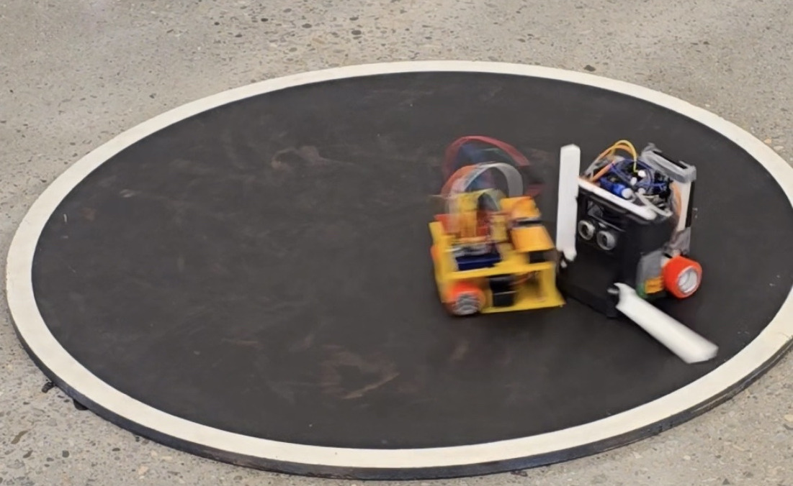

SUMO Bot Team Project Manager
University of Toronto Robotics Association (UTRA)

May 2025 – May 2026
May 2025 – May 2026

Led the development and coordination of a student robotics team building autonomous SUMO robots at the University of Toronto Robotics Association.